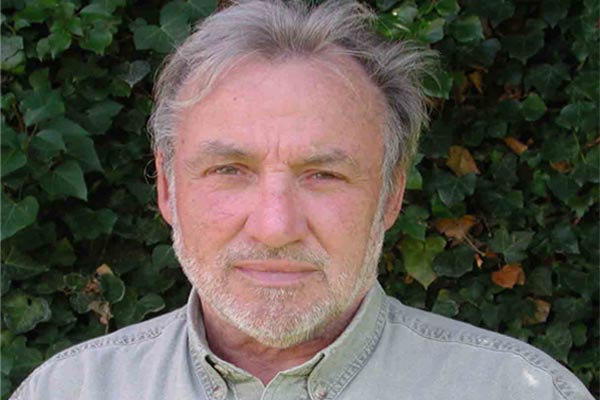

اجريت هذه المقابلة مع خبير الطيور البريطاني ريتشارد بوتر خلال ورشة عمل اقامتها جمعية حماية الطبيعة في لبنان SPNL في حمى المعبور الابيض في جرود عكار- الهرمل، في المركز الذي قدمه السيد ياسين جعفر لتسهيل مهمة الجمعية ودعم التحرك لاجل اقامة صيد مستدام في لبنان اسوة بباقي الدول الحضارية، وحضر الورشة صيادون وبيئيون ومديرو محمّيات..
ما هو هدف نشاطك هنا؟
ليس الهدف هو القيام بنشاط فقط مع جمعية حماية الطبيعة في لبنان، بل مساعدتها ومساعدة الحكومة اللبنانية في تثقيف الناس، ليعرفوا أكثر عن الطيور المحلقة، ويساهموا في حمايتها من خلال فهم طبيعة حياتها ودورها الطبيعي.
ألا تعتقد أنك تدل الصيادين على ممرات الطيور التي تعرفها، وتعرضها بذلك للخطر أكثر؟
إنه سؤال مهم. ولكن اتضح لي أن هؤلاء الصيادين صريحون كثيراً ولديهم وعي كبير، ولا أظن أنهم قد يستعملون هذه المعلومات لأجل إلحاق الأذى بالطيور، لأنهم بالفعل يدركون أن الصيد العشوائي يضرُّ بهم وأن الصيد والحفاظ على البيئة عمل متكامل يعود بالفائدة على الجميع.
ألا ترى أن التوعية عبر محاضرات هي توعية تقليدية؟ أين البرامج التلفزيونية البيئية والإعلانات التوعوية التي تحقق نتيجة أسرع لعملكم؟
في الحقيقة لا يوجد عندنا برامج من هذا النوع، وقد تكون فكرة جيدة لنصل أسرع إلى الناس ويمكن أن تنطلق هذه الأفكار من لبنان ونستعملها في أوروبا، لمَ لا؟
إلى أي مدى يمكننا أن نُثقّف الصياد بيئياً، والبيئي في عالم الصيد، في ظل تضارب المصالح وفق الثقافة المبتورة السائدة حالياً؟
قد يكون من الصعب جداً أن يغير الكبار في السن مفهومهم تجاه هذه الأمور، ولكن لدينا قدرة أن نؤثّر في الشباب لنصنع منهم أصدقاء للبيئة، عبر برامج مدرسية وتواصل معلوماتي علمي واضح.
هل مارست الصيد في حياتك؟
لا، لم أكن صياد برٍّ ولا بحرٍ. ولكن في عائلتي يوجد صيادون وأنا لست شرساً أو متطرّفاً معهم، إنّما أعطي وجهة نظري، فأنا أعلم أنه لا يمكننا منع الصيد، ولذا علينا تنظيمه للحفاظ على بقاء الطيور وتجنب خطر الانقراض.
كيف تجد قرار منع الصيد في لبنان الذي لم يطبق وتسبب بكوارث للطيور؟
قرار منع الصيد بهذا الشكل هو قرار خاطئ، يجب أن تكون هناك قوانين مُنصفة، ويجب أن يكون هناك امتحان للصياد إلى جانب ضرورة التشدد في تطبيق القانون.
أي تجربة مثالية عالمياً برأيك، هي الأفضل لإنصاف الصياد وحماية الطيور؟
أنا أقترح على الدولة اللبنانية، كحلٍّ من الحلول النافعة، أن تتبع قوانين الإتحاد الأوروبي، لأنها قوانين منطقية ومنصفة، وأبرز عناوين التجربة الأوروبية منع صيد الطيور المهدّدة بالإنقراض، واصطياد الطيور بأعداد معقولة، وإجراء امتحان للصيادين في استعمال السلاح ومعرفة المواسم، وأي طيور مسموح صيدها. وفي حال مخالفة القانون يدفع المخالف غرامات مالية كبيرة ويوضع في السجن لعدة شهور.
يصر بوتر على ضرورة عدم التباعد بين الصيادين والبيئيين، مؤكداً أهمية الحوارات واللقاءات فيما بينهم، لأنها تزيل الحواجز النفسية، فيتحسن أداء الجميع في فهم الأمور بعمق أكثر، لأن هناك مصلحة مشتركة في وجود الطيور والحفاظ عليها من الإنقراض، لتستمر هواية الصيد وتستمر دورة الحياة الطبيعة بكل كائناتها. ويشير إلى أن البيئي يعمل لأجل الصياد أكثر مما يعمل الصياد لنفسه. ويلفت أن الأذية الكبرى للطيور لا تأتي من الصياد، الذي يعتبره في المرتبة المؤثرة الثالثة، بينما يتصدر المرتبة الأولى التدمير الكارثي للغابات والمستنقعات التي يعشعش بها الطير الذي لم يعد يجد له مأوى، والمرتبة الثانية التلوث والمبيدات التي تقتل الطيور بأعداد كبيرة جداً.
قال في اللقاءأعتبر نفسي رجلاً محظوظاً لأن عملي هو هوايتي المفضلة وبحثي الدائم.خاب أملي حين سمعت من البعض في لبنان أنهم يفتخرون بقنص الطيور المهاجرة.سمعة لبنان غير جيدة ولكنه يمكن أن يحسنها، ويكون نموذجاً صالحاً للدول الأخرى، إذا تعاون الصيادون والبيئيون لإقامة الصيد المستدام لحماية الطبيعة.يجب وضع منهج تربوي لتعليم الأجيال تقدير واحترام الطبيعة والحيوانات والطيور.قطر والأردن وعمّان يقومون بجهود جيدة لأجل حماية الطيور.الإماراتيون يهمّهم الصقر بالدرجة الأولى.مجلتكم "صيد" يمكن أن تحقق الكثير لأنها تقدم وجهتي النظر للصياد والبيئي وتوصل إلى صلب الموضوع ولا أحد يشعر بالغبن معكم.حوار زينة بدران